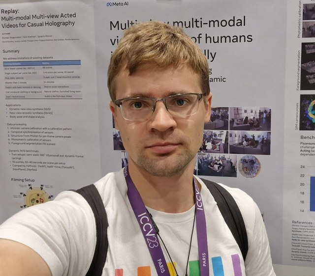
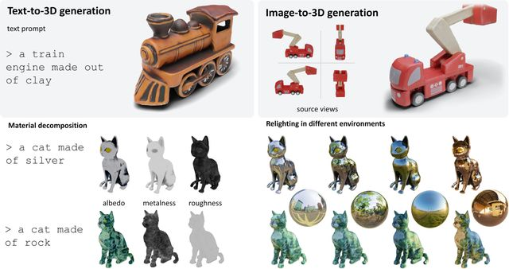
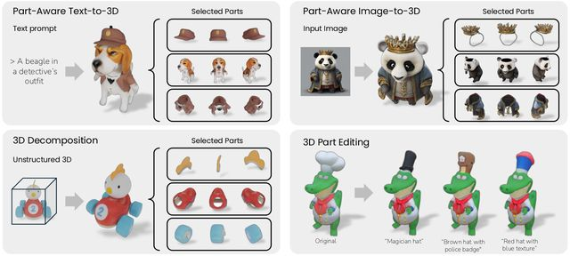
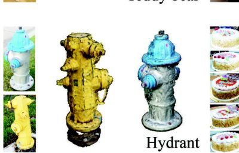
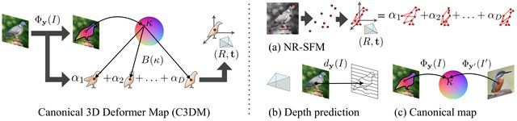
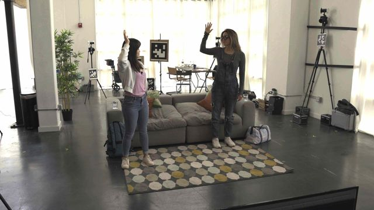
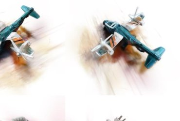

Roman Shapovalov
Applied AI researcher
About
I lead an Applied AI team at Meta in London, working on reasoning in large-scale models. Before that, I spent seven years as a research engineer in FAIR / GenAI doing 3D computer vision: reconstructing objects from photos and videos, and generating 3D assets from text or image prompts.
These days I'm into generative models (diffusion, flows), neural rendering, and making 3D generation actually useful. More generally, I am motivated by making AI methods useful for products and STEM research.
Research

Fast 3D generation
Meta 3D AssetGen (NeurIPS 2024): text-to-mesh generation with high-quality geometry, texture, and PBR materials. Then AssetGen (2026): production-grade quality at interactive speed.

Generation with Parts
PartGen (CVPR 2025): part-level 3D generation and reconstruction with multi-view diffusion models. MeshFlow (CVPR 2026, Highlight): efficient artistic mesh generation via MeshVAE and a flow-based diffusion transformer.

Common and Uncommon Objects in 3D
3D learning is starving for real-world data, so we collected it: CO3D (ICCV 2021, oral, best paper honourable mention) and its wilder counterpart uCO3D (ICCV 2025) — large-scale video datasets for learning 3D object reconstruction and generation.

3D without the cheat codes
Canonical 3D Deformer Maps (NeurIPS 2020), DensePose 3D (ICCV 2021, oral) and Unsupervised Learning of 3D Object Categories from Videos in the Wild (CVPR 2021): recovering 3D shape from images and video with little to no supervision.

Replay Dataset and Deformable Reconstruction
Multi-view videos of normal humans in normal circumstances: up to 4 actors per scene, 9 static + 3 head-mounted cameras, and audio as a first-class citizen. Evaluation of non-rigid reconstruction methods (ICCV 2023), spatial audio synthesis (CVPR 2023).

PyTorch3D
I contributed to Meta's library for 3D deep learning — differentiable rendering, mesh and point-cloud operators — and designed Implicitron, its framework for neural implicit representations and neural rendering. It's the hammer behind half the papers above.
Off the clock
Tennis, board games, and intellectual games. Father of a daughter.